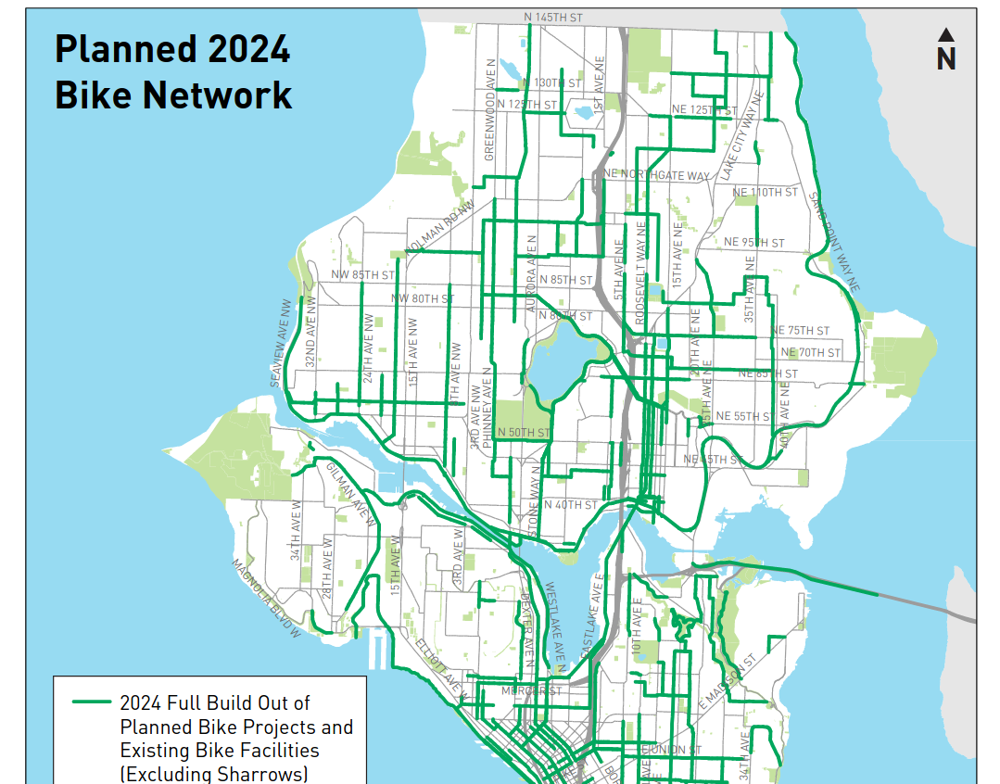
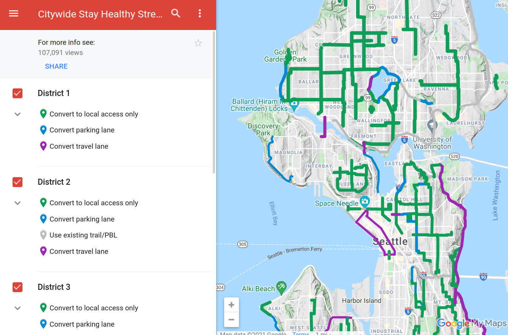

Project motivation
This document will argue why this bike network software can help achieve the UN's Sustainable Development Goal 11 of improving cities.
The theory of change summary:
- Problem: Car dependency harms the environment. Biking is one low-cost alternative. Cities need to build infrastructure to make it safe. Poor communication between stakeholders slows down these changes.
- Activities: This new "Ungap the Map" software will help stakeholders communicate more effectively.
- Outputs: Better plans for bike networks and increased civic engagement.
- Outcomes: Bike networks get built more quickly.
- Impacts: More people decide to bike, decreasing the environment impact of transportation.
Driving is a problem
According to the EPA, 29% of greenhouse gases in the USA come from transportation in 2019. Driving causes many other externalities -- noise pollution, an incredible amount of space is used for parking, collisions kill many people, and incentivizing driving reinforces suburban sprawl and unsustainable land use patterns. Even though less people drove in 2020, more people died from car collisions. Similar statistics can be found across most of the world. Many people have made strong arguments that cities need to drastically reduce the use of personal motor vehicles for trips.
A popular deflection currently is that fossil-fuel based cars are the problem, and that electric vehicles will solve these problems. While they certainly help with engine emissions, they still pollute due to tires and do nothing to help with the space consumption or safety problem. And migrating the majority of gas cars to electric would be incredibly expensive!
Another false promise is autonomous vehicles. The technology is seemingly always a few years away from wide rollout. Even once it's ready, there's a very real risk that it'll just exasperate problems with suburban sprawl even more, by letting people tolerate longer hands-off commutes. As Tom MacWright has explained, beware the ethical car.
The alternatives to driving
Major European and Asian cities have effective mass public transit, and some -- the Netherlands being the most famous example -- have a high percentage of trips done via bicycle. The world isn't missing some new technology like autonomous cars; car-centric places can just look at these existing places for inspiration on how to design sustainable transportation systems.
Transitioning away from cars is a very complicated problem, and the solution probably involves land use changes (allowing mixed commercial/residential use to create 15-minute neighborhoods, and changing zoning laws to allow mid-rise residential buildings where only single-family homes exist today), investing in public transit (both local buses and regional high-speed rail), designing proper spaces for walking and biking, and encouraging remote working and staggered commute times. It's also important to discourage automobile use as these alternatives become available, by ending gas subsidies, implementing congestion charges around city centers, removing parking minimum requirements, and so on.
Many of these changes are expensive or very complicated and slow to implement.
The case for biking
This project focuses on a small piece of the solution: biking. Both cost and benefit motivate this. Amazingly, 60% of trips in the US are under 5 miles -- a range easily covered by a bike or an e-bike. This report estimates that urban transport emissions could be reduced by 7% if a modest 16% of trips were shifted from driving to biking. Biking also gets people doing moderate exercise, and it's even a low-impact activity for people with knee injuries! The barrier of entry and cost is much lower than driving, making it a more widely accessible option.
One of the main barriers stopping people from switching to biking is safety. Most streets are designed for moving vehicles quickly and can be incredibly unsafe for cycling. Luckily, the cost of reallocating the space on these streets to separate cyclists from motor vehicle traffic is low, compared to building new light rail lines or improving bus route frequency. In the extreme case, making a road more comfortable to bike on can be done with very little money or time, via techniques of tactical urbanism. Some advocacy groups or cities will set up a temporary demonstration of a changed street by simply using signs and movable barriers for a few days, and in other cases, these street improvements are even installed in the dead of night by citizen activists.
Rising momentum
Right now, cities across the world are actively finding ways to reduce car dependency. This is a ripe time to accelerate this culture shift. Some examples:
- Paris has installed a huge number of new bike lanes, and seen usage skyrocket
- In the middle of the sprawling Phoenix metro area, the new Culdesac project is building the US's first car-free neighborhood
- Many US cities are attempting Vision Zero plans to reduce the number of traffic fatalities
- Birmingham is piloting a low-traffic neighborhood
- Advocates are pushing for a massive car-free zone in Berlin
- Many US cities transformed streets into outdoor dining spaces during COVID. This kind of change would never have happened politically a few years ago!
- Some US cities are considering removing highways that tear through the city center and have been historically used for redlining
In short, the public imagination is picking up on these ideas. But this needs to happen as fast as possible to transform cities into more sustainable places and mitigate climate disasters.
Barriers to change
So why isn't every city following Paris and building out a low-cost bike network to encourage people to stop driving? The issue is often quite political -- if city leaders build without the support of their constituents, they won't be re-elected. The public very much are stakeholders. There's often quite fierce opposition to building new bike lanes. Sometimes the arguments are based on specifics -- some parking will be lost, and despite studies showing otherwise, nearby businesses fear losing customers. (But these arguments rarely quantify how much parking is available nearby -- largely because this data doesn't generally exist without an on-the-ground survey.) Others make a very short-term argument that vehicle traffic will be delayed by the reduction in lanes, and this will actually increase pollution in the area. In other words, the concerns raised are by individuals who don't buy into the idea of "mode shift" at all -- that the purpose of the new cycling infrastructure is to make driving a bit less enticing and encourage people to move more sustainably. Some people quite understandably feel "left out" by these transformations -- they've lived in the city for a long time, moved around it in a certain way, and they feel threatened by the changes. Making it safer to bike is inextricably tied up in this concern about gentrification -- driving out long-time residents for younger, often wealthier people who are seen as the target audience of the changes.
This is a really unfortunate miscommunication. Proper cycling infrastructure and land use patterns make it very comfortable for all ages, abilities, and demographics to thrive in a city. If cycling is just for young and athletic people, why do people in the Netherlands between 18 and 75 years all have similar distances cycled per day? Driving a car is quite expensive, with insurance and maintenance, and children or people with vision impairment are totally excluded. Cycling can be more inclusive.
A strong theme in the rhetoric around resisting change is that "the new infrastructure won't serve me individually." This view definitely ignores how many people the changes will serve. But it's also short-sighted -- if lots of other people switch away from driving, that's less cars on the road and less traffic for the individual who wishes to continue. We all breathe the same air, so reducing the vehicles on the road will benefit everyone. This is a longer-term, broader consequence that's hard to understand.
Another problem with reasoning about incremental changes (often for just a single stretch of road being redesigned) is ignoring the long-term vision. Cities use "master plans" and other long-term planning documents to communicate the overall direction, and may explain the individual changes in context of this vision. But if that story isn't effectively told, then the public can wind up arguing too much about the details.
In other words, I'm arguing that one of the biggest problems is around communication. If city leaders could more effectively market a proposal to their constituents, and if the public was better educated about the indirect consequences of these changes, I believe the political will to deliver changes would gain traction.
Let's look at how this communication happens today.
Large-scale changes
As a first example, let's look at Seattle's bike master plan, which describes what the bike network will look like by 2024. The official documents include a PDF that has an overview map, which can't even show the road names by virtue of being a fixed image:

There are maps showing more detail in different areas:

And tables summarizing some new routes:

The official page doesn't link to any web map, but digging around reveals an ArcGIS map:

This is a little better, but it's overall pretty tough to just zoom into a road, see at a glance what it looks like today, and see what the promised changes by 2024.
A second example is Seattle Neighborhood Greenways, an advocacy group, describing which streets they'd like to see changed to prioritize people walking and biking, as a way to encourage exercise and social distancing during COVID. Their plans are a layer on top of Google Maps:

People are accustomed to interacting with maps by routing, to see what their particular trip might look like. None of these solutions let you plan a trip and compare how things might look before vs after the changes. As an individual, I want to know if these plans will make it safer, let me avoid hills, or let me comfortably bike past a commercial district. I have to interpret these planned changes and apply them to my particular situation. Or if I care about broader impact, these documents fail to sell me on the benefits, "we forecast that 200,000 weekly trips will likely start biking instead of driving if we make these changes. That could lower PM2.5 pollution by 3%..."
These methods of communication are also very "dry" -- they do nothing to paint a picture or tell a story about how awesome the city will be once this is built.
Individual projects
Let's examine plans to install a "lid" over the 520 highway in Montlake, Seattle. The plans show a new park where there used to just be a loud, unpleasant road. This is better in terms of visioning! But advocacy blogs have called out some important questions about these plans -- how long will it take for a pedestrian to wait for a light and cross from the west to east side (from a residential area to a light rail station)? In other words, what's the actual experience of just moving through the space as a pedestrian? A static map or diagram is going to have a hard time communicating this.

Visualizations of changes also tend to be very high-level or very low-level, and switching between the two views is difficult. For changes around Green Lake, here's an overview map:

And a CAD drawing:

One of the best examples communicating changes I've found is San Francisco's Golden Gate park story map:

Gathering public feedback
Besides just asking people how they feel about some proposals, sometimes governments directly solicit ideas from people -- a form of crowd-sourcing. Seattle's Your Voice, Your Choice is an example, where people can drop pins on a map, describe a problem and possible solution. This program is meant for low-cost, "spot fixes" like making a certain intersection safer.
Probably the state-of-the-art in public engagement is Streetmix, a very easy-to-use and fun website that lets you rearrange space along a single street. People routinely share ideas through Streetmix, and public agencies often explain changes using it. The sheer ease-of-use and strong visuals are keys to its success -- the creators have a strong design background, and it pays off. Proposals in Streetmix have even become reality -- Bogota gathered 7,000 proposals from the public, then settled on something based on these designs.

Members of the public aren't experts in transportation engineering, so why not leave the work to the professionals? Laura Adler writes "Only with simple, accessible simulation programs can citizens become active generators of their own urban visions, not just passive recipients of options laid out by government officials.". Individuals are experts at some slice of the city, since they interact with it every day. It's unlikely city planners know every corner of the city as deeply as everyone else combined, so incorporating their experiences is important.
Besides generating better proposals, participatory design can also decrease resistance to change. Brian Deegan, one of the UK's leading street designers, describes this during a workshop for planning low-traffic neighborhoods. When he frames things as a puzzle -- "The number of cars has doubled in the last few years, they just don't fit, we have to fix this somehow" -- people set aside their personal biases and just treat it as an abstract problem to solve. As a result, everyone in the room feels more invested in the ideas produced. "Gamifying" the planning process could be powerful.
How this project can help
A/B Street in general and this bike tool in particular are an attempt to:
- help different stakeholders communicate more effectively
- visually inspire people to see what their city could become
- increase public engagement in transportation planning and amplify voices
Some example "success stories" might look like this:
- City planners use the software to sell the public on existing plans that're facing the threat of budget cuts
- Advocacy groups help amplify that message
- Support for the plans grows, people vote to fund it
Or:
- The government is struggling to implement a contentious low-traffic neighborhood plan. A vocal minority of the public is demanding the changes are cancelled.
- The city organizes an online "competition" to design the best compromise, using the new software
- People self-organize and debate their competing solutions to a shared puzzle, focusing on the details specific to their area
- The government adopts the winning solution and people accept it more readily, because they've been forced to work through the trade-offs of alternatives themselves
To clarify, A/B Street isn't meant to replace any internal CAD or engineering processes that the city already internally uses. It's meant for rapid prototyping and communication; it's a new first step in the design process.
Prior art
Other software exists for related problems. But nothing other than A/B Street:
- visualizes as much detail about existing street layout and bicycle facilities
- lets users easily mock up changes to a bike network, and route using the changes
- works anywhere in the world without substantial setup time
- is free and available to anybody
Streetmix is a huge inspiration behind A/B Street. But it only focuses on an individual street segment; it can't show how bicycle infrastructure exists in context of an entire city.
Remix has some similar goals, but it's meant for different city agencies to internally collaborate. It's expensive, unavailable to the public, and cities are only just starting to use it for public communication.
PTV Vissim is an industry-standard traffic simulator. Many of its customers use it to calibrate traffic models and plan changes. But it's extremely expensive and very difficult to use, especially when initially setting up in a new city.
MATSim and SUMO are open source traffic simulators that can run anywhere in the world. However, they're hard to setup and use, not focused on visualization, and can't easily prototyping changes to roads. They also don't run in web browsers, a further barrier towards people that aren't tech-savvy trying them.